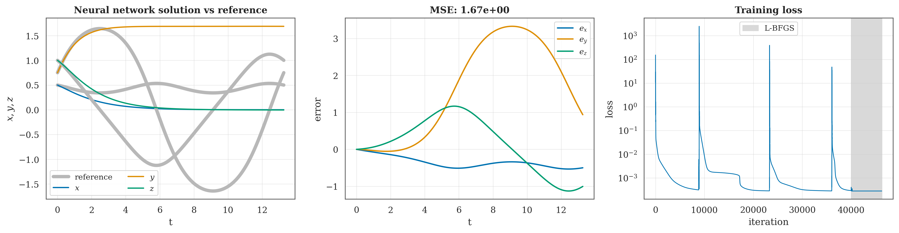
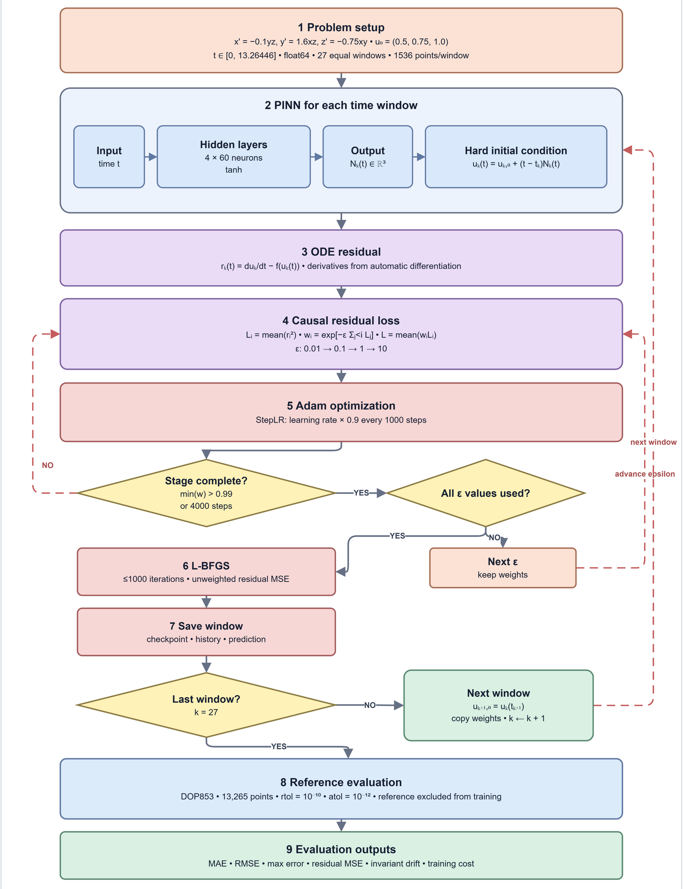
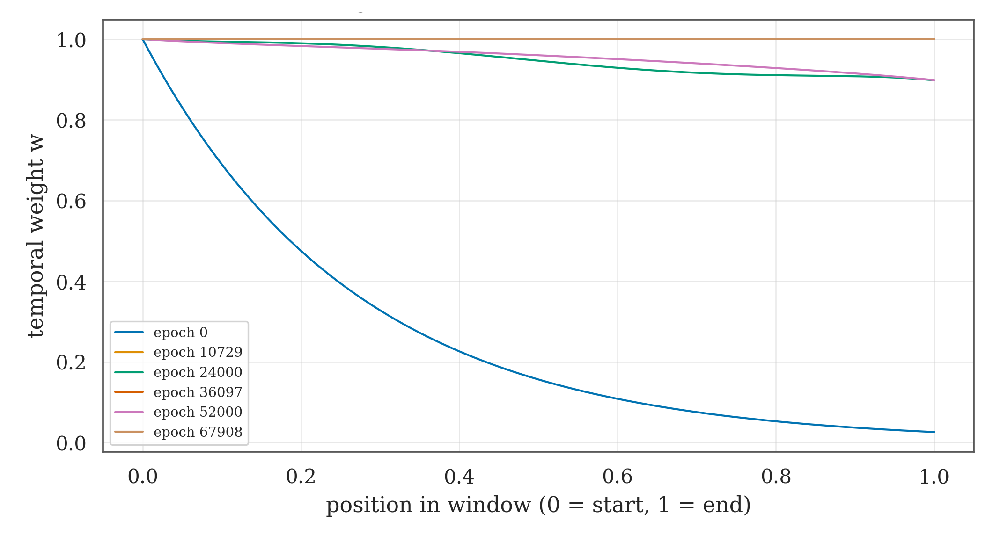
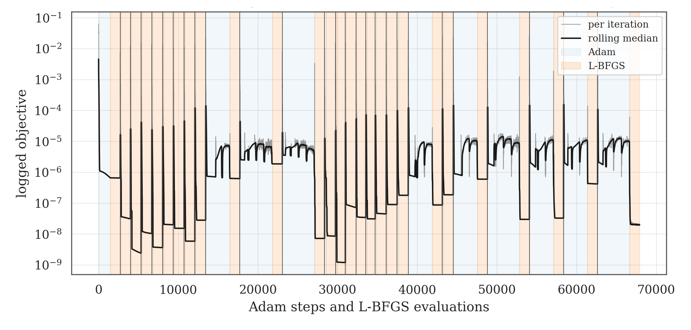
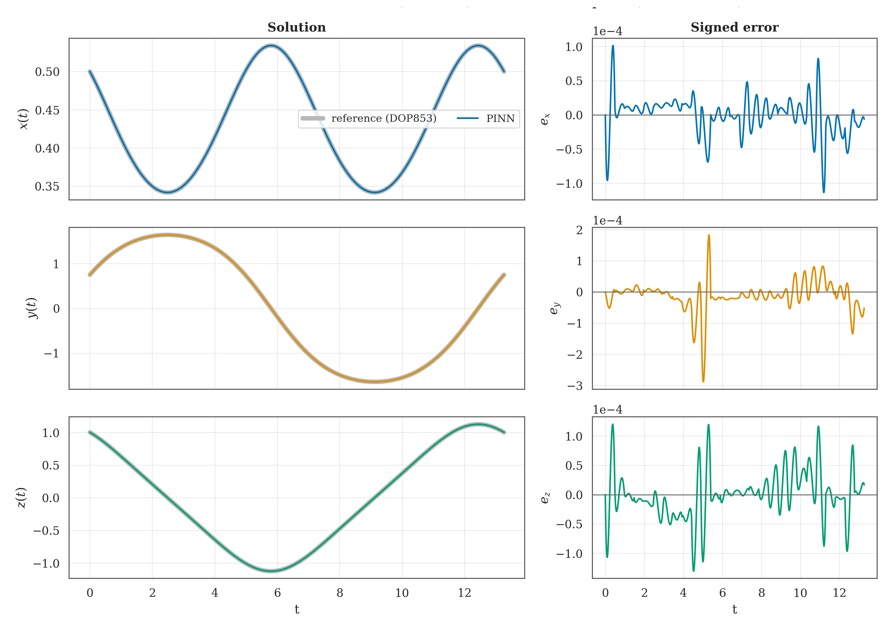
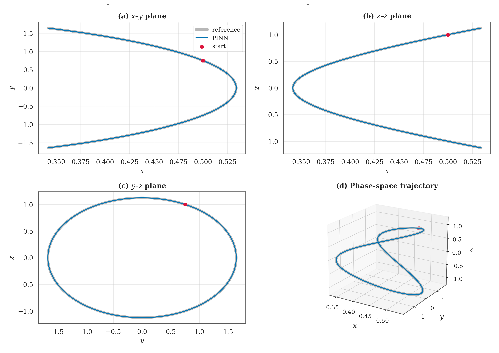

The Long-Horizon Problem
One network per time window with causal weighting cuts the combined RMSE from 2.237 to 6.97×10−5, trained only on the ODE residual.
- A full-interval PINN couples early and late times; later states depend on earlier ones.
- Errors accumulate and backtracking is impossible: our saved single-network run stalls at RMSE 2.237.
- Wang et al. (2024) fit early times first; we add time windowing.

Lorenz-1960 IVP
| Initial state u0 | (0.5, 0.75, 1.0) |
| Coefficients (k = 2, l = 1) | (−0.10, 1.60, −0.75) |
| Horizon | [0, 13.26446] · nearly closed orbit |
| Reference | DOP853 · rtol 10−10 · atol 10−12 |
| Evaluation | 13,265 uniform times |
| Role of reference | monitoring only: never in the loss |
- At the rounded endpoint the reference nearly returns to its start: a nearly closed orbit, not an exact period.
Windowed PINN
- Each window k has its own 4×60 tanh network: windows share boundaries, not parameters.
- A hard trial solution fixes every initial state by construction: no IC penalty, no weight to tune.
- Each window starts from the previous predicted endpoint; weights are copied as a warm start.
Run Configuration
| Interval / windows | [0, 13.26446] / 27 equal windows |
| Parameters | 11,283 per window · 304,641 total |
| Collocation | 1,536 uniform per window · 41,446 unique points |
| Optimizer | Adam 10−3 rate, ×0.9 every 1,000 steps |
| Causal stages | ε = 0.01, 0.1, 1, 10 · cap 4,000 steps |
| L-BFGS | ≤ 1,000 closures per window |
| Precision / seed | float64 / seed 0 |
One Network vs 27 Windows
| Measure | One network | 27 windows |
|---|---|---|
| Trainable parameters | 11,283 | 304,641 |
| Training points | 39,793 LHS | 41,446 uniform |
| Combined state RMSE | 2.237 | 6.97×10−5 |
| Max state-error norm | 3.346 | 3.09×10−4 |
| Collocation residual MSE | 2.80×10−4 | 1.87×10−7 |
| Recorded wall time (s) | 4,529 | 881 |
Descriptive comparison: several options change together, so no single factor is isolated.
Training Pipeline

Causal Weighting
- Residual losses are ordered in time: each weight depends on the accumulated loss of all earlier points, so the network must fit early times before late times.
- Weights are recomputed every epoch and stay fixed (detached) while Adam takes the gradient.

Optimizer Sequence

Trajectory Accuracy

| State | MAE | RMSE | Max |
|---|---|---|---|
| x | 1.89×10−5 | 2.74×10−5 | 1.13×10−4 |
| y | 2.94×10−5 | 4.96×10−5 | 2.88×10−4 |
| z | 2.78×10−5 | 4.05×10−5 | 1.30×10−4 |
| State norm | 5.12×10−5 | 6.97×10−5 | 3.09×10−4 |
Physics Checks
- Residual MSE 1.874×10−7 (collocation) vs 1.872×10−7 (evaluation): generalisation gap ≈ 1.000.
- State error and ODE residual stay in the 10−5–10−3 band along the whole orbit.
- Values are exactly continuous at all 26 inner interfaces, by construction of the hard trial solution.
- The DOP853 reference itself drifted less than 4×10−10.
Phase Portraits

Limitations & Future Work
- Each window after the first starts from a predicted state: earlier error is carried forward, and derivatives can still jump at the interfaces.
- One seed, one initial state, one coefficient set. The two-run comparison changes several options at once, and no windowed run without causal weights was saved.
- Next: one-change-at-a-time runs with several seeds, and problems with boundary conditions at each end.
Conclusion
The 27-window causal PINN tracks the nearly closed Lorenz-1960 orbit at a combined state RMSE of 6.97×10−5 against DOP853; a single full-interval network recorded 2.237.
Trained from the ODE residual alone; the reference is used only for evaluation. Code, config and saved run: github.com/ihmorol/lorenz1960-pinn
Lorenz (196) Tellus · Raissi, Perdikaris & Karniadakis (2019) J. Comput. Phys. · Lagaris, Likas & Fotiadis (1998) IEEE Trans. Neural Netw. · Wang, Sankaran & Perdikaris (2024) Comput. Methods Appl. Mech. Eng. · Penwarden et al. (2023) J. Comput. Phys. · Matthews & Bihlo (2024) PinnDE · Virtanen et al. (2020) SciPy 1.0